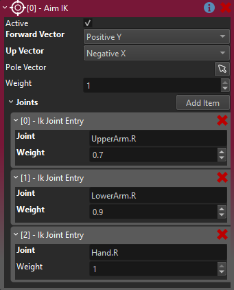

Aim IK Component
The Aim IK component adds procedural animation to an animated mesh through inverse kinematics.
The aim IK component rotates a bone of the skeleton such that it points towards a target position. Optionally, this rotation can be distributed over multiple bones in a chain, to make the result more natural.
Typical use cases for this are for characters to look at objects, guns to point correctly at a target or align feet with the ground slope.
In the video below, this is used to rotate the head such that it looks at the stone. The rotation is distributed over three bones, such that the upper body, neck and head each contribute a part of the motion.
This video shows a common problem, an aim animation is used to have the gun point at something, but the animation doesn't let the character point precisely forwards. Once multiple animations are combined for movement, such as walking sideways, the direction that the character points into is completely off target.
In the video below, aim IK is used to correct both the right arm, as well as the head, such that the character precisely points and looks at the target. Here the IK component is also only active (and its weight is gradually faded in and out) when the player actually wants to aim.
IMPORTANT
Inverse kinematics is currently only applied when an animated mesh receives a new animation pose. Thus, to actually see the result of IK, you need to have a simple animation component or an animation controller component attached, and check the option Enable IK on it. It also has to play some animation in a loop, such as an idle animation or literally a single keyframe pose.
How to Set Up Aim IK
The Aim IK component has to be attached to a child node of the animated mesh that it is supposed to affect. The position of that game object is where the target bones will point at. Add one or more entries to the Joints array. Each entry identifies a bone to control from the skeleton. The Weight of each entry defines how much of the necessary IK to apply. At a value of 1, the bone would be rotated to fully point at the target. With a weight of 0.5, only half the rotation would be applied. This is used to distribute the rotation piece-wise over multiple bones.

IMPORTANT
The order of the bones in the array is important. Aim IK is applied once for each entry, in the order in which they are listed. Each entry affects the next one. So in this example first the upper arm will be rotated some amount, then from that result the necessary rotation for the lower arm will be computed and applied, and finally from that result, the necessary rotation for the hand is computed and applied.
NOTE
The weight for each entry is relative only for that step. Thus the value doesn't have to be increasing like in this example. For instance, you could have three bones that each have a weight of 0.5, so that they gradually come closer to the desired result. However, usually the last step uses a weight of 1, to finally reach the target. You may also need to correct multiple bones at the end of the chain with a weight of 1.
As the next step, you need to specify which axis of the target bones to align with the target direction. This is set with the Forward Vector property and depends both on how your skeleton is built, and what effect you want to achieve. Often you literally just need to try out, which of the 6 cardinal directions gives the desired result. You also need to set an (orthogonal) Up Vector. Again, this is mostly trial and error, to find the best axis.
NOTE
The skeleton of your animated mesh must be authored such that the bones have the proper direction and roll, for this to work. If, for instance, your hand bone doesn't point straight into the direction into which the hand mesh points, you cannot get the aim to work right. Similarly, if your bone has some roll (relative to the visual mesh), you may not be able to find an up vector that gives good results.
Pole Vector
When rotating a bone towards a target, there is not only the main direction to consider, but also the roll around that direction.
The pole vector is an optional object to use as a secondary target, that the Up Vector should point towards. In the case of pointing an arm, this is typically used to specify into which direction the elbow should point (for instance to the left, right, up, down). Usually the pole vector object would be another child object of the animated mesh and thus move along with it.
Again, for this to work, your skeleton needs to be build such, that the bones have the proper roll, such that their orthogonal directions point into a useful direction. For example an elbow joint should be built such, that the forward direction (for example +Y) goes straight along the forearm, and its roll should be such, that the sidewards direction (+X or +Z) points into the direction of the elbow.
NOTE
Often aim IK already works good enough without a dedicated pole vector, so only set it up, when the result doesn't look convincing enough without it.
IMPORTANT
The IK computation attempts to align the up direction with the direction towards the pole vector by rotating around each bone's forwards direction. Therefore the up vector will generally point roughly towards the pole vector (use the debug visualization to inspect this). However, there are always two directions that a bone could be rotated around, clockwise or counter-clockwise. The IK calculation will choose the shorter rotation, which means that if the pole vector is at a position where rotating either way round is close to 180 degrees, a minor change (such as from a playing idle-animation) will make the rotation flip back and forth between the two. If this is the case, first try to use a different up direction and potentially use an inverse pole vector. However, depending on the range of motion that you want to support, you may also need to dynamically move the pole vector when you change the aim target position.
Debug Visualization
Set the DebugVisScale property to a non-zero value to see a visualization of the various joints and vectors. The visualization will only appear once you simulate the scene.

In the image above an aim IK chain with three bones was set up.
For every bone involved there are three arrows, one red (X), one green (Y), one blue (Z), indicating the cardinal directions of the bone, as they are defined in the model. These arrows should help you choose which direction to use for the forward and up vector.
There's a light green sphere at the target position and a light green arrow pointing towards the target position.
The orange arrows represent the chosen up direction. In this example they point into the +X direction, which is why they align with the red arrows.
The cyan cross represents the position of the pole vector and the cyan arrows point towards the pole vector. In case an inverse pole vector is used, they would point into the opposite direction.
Component Properties
Forward Vector: The cardinal axis of the bones to align with the aim direction. Usually found by the scientific method of trying all possible options.Up Vector: The orthogonal cardinal axis of the bone to use as the up vector. If available, the bone will be rotated such that theUp Vectorpoints towards thePole Vectorobject.Pole Vector: An optional object to use as a secondary target, to have theUp Vectorpoint towards. See details above.Inverse Pole Vector: If enabled, the pole vector will point away from the given position, not towards it.Weight: The overall weight to use to apply the IK. This is typically used at runtime to gradually fade the IK in and out.Joints: An array of bones to apply IK to. Order matters. Unrelated bones can be listed, for example you can let both the left and right arm point at the same thing. However, be careful to always list parent bones first. TheWeightdefines how much of the necessary rotation to apply to a bone.DebugVisScale: If larger than zero, debug visualization will be rendered, to show the direction of the aim, pole vectors, up vectors, forward vectors, etc. Use this to easier see the effect of the configuration.